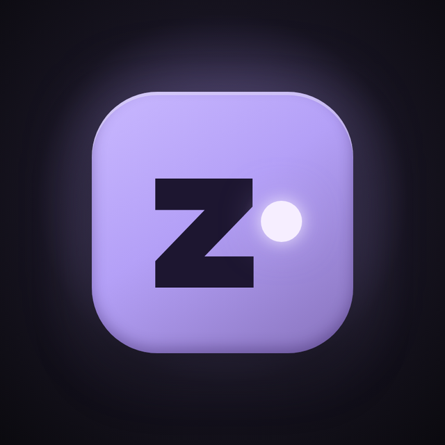

Zenframe Labs makes After Effects tools for editors. Zenframe Assistant puts Zeni in your panel: an assistant that hears your music, sees your frames and handles the repetitive parts, so the cuts and the timing stay yours.

Zeni works right inside your comp: he hears the music, looks at your frames and takes care of the repetitive steps you hand him.
Ask in plain words. Zeni reads the project, listens to the music and does the work in After Effects. Anything that changes your project shows up as a card first, so nothing happens without your yes, and it is one Undo away.
Every feature is there to save you clicks, never to make the edit for you.
Reads the BPM and finds the real hits, so markers and timing line up with what you hear.
Strong bass, bass and snare, or every beat. Each marker lands on the frame the hit starts.
Zeni can look at rendered frames and video references to understand what you are going for.
Flow AMV, jugg, velocity, mograph and MMV, so you can talk to Zeni the way editors talk.
Reads your .aep project to learn how your comps are built before touching anything.
Talk to Zeni instead of typing when your hands are busy on the timeline.
Draft scripts or edit the project directly. Every change shows a card first and is one Undo away.
Zeni dances to your comp on playback, with headphone effects that fire on the drums.
Every update is posted in the Zenframe Labs Discord first.
Zenframe Assistant 1.5.1 for After Effects. One install file, then Zeni is in your panel.
Source on GitHub [DISCORD INVITE]